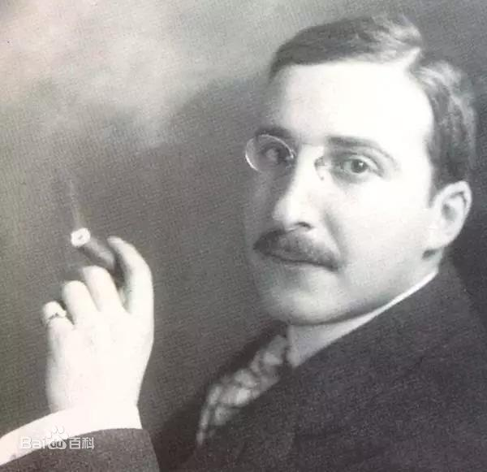

Stefan Zweig
Stefan Zweig was an Austrian novelist, playwright, journalist and biographer. At the height of his literary career, in the 1920s and 1930s, he was one of the most widely translated and most popular writers in the world.
Click